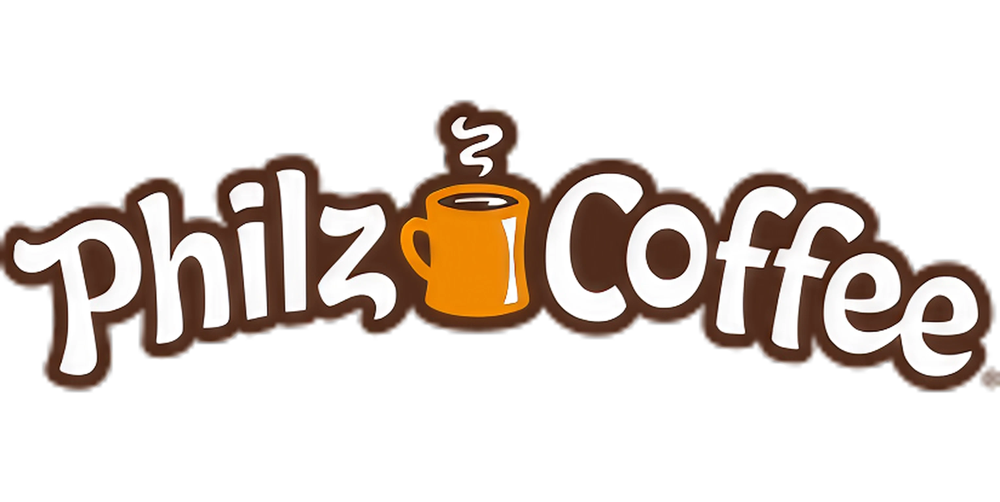
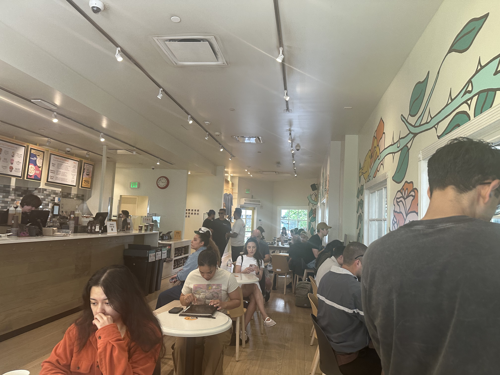
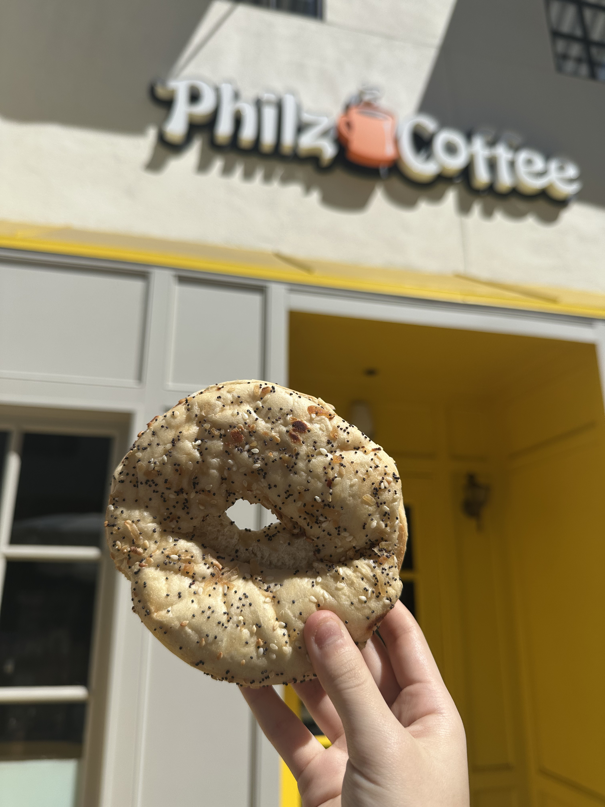
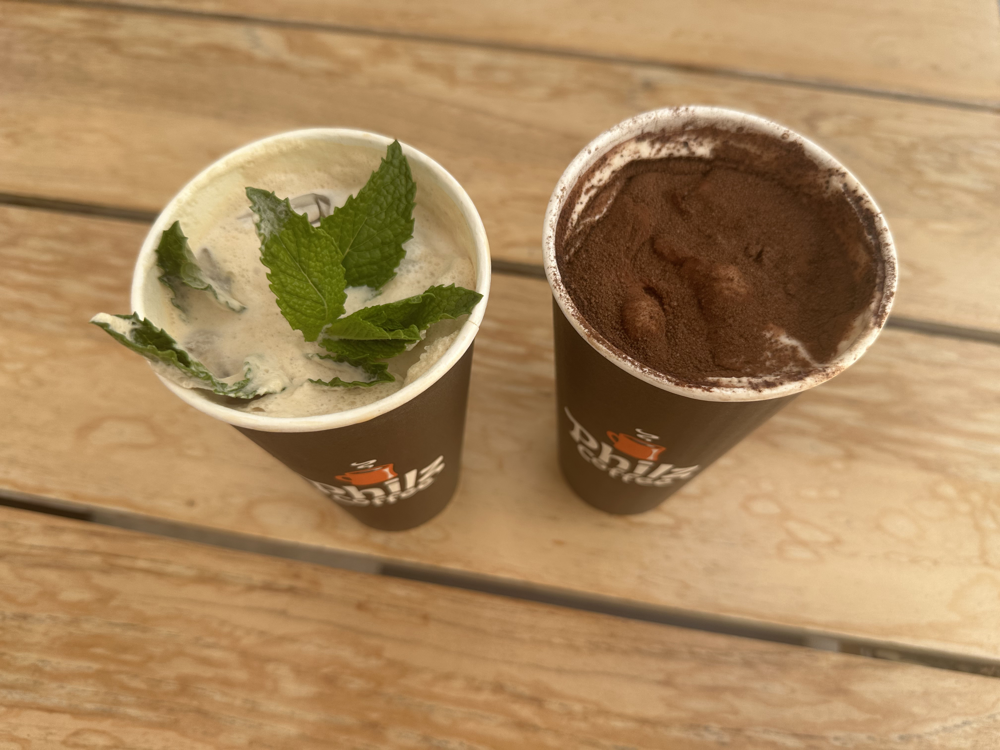

not really a bagel spot, but they do have a small selection if you want something with your drink—more of a side than the main thing.

bagels i tried
jalapeño bagel
my verdict
7/10

's
everything bagel
my verdict
6/10

's
my 2 crumbs
this one felt more like a “grab a bagel with your coffee” situation rather than going there for the bagels. the jalapeño had a little kick but wasn’t super strong, and the everything bagel was just… fine. nothing bad, but nothing that really stood out either. BUT i also got the tiramisu coffee and it was SO yummy—honestly that was the highlight. super creamy, a little sweet, and way more memorable than the bagels. would i go again? yeah, but for the coffee, not the bagels.


6/10